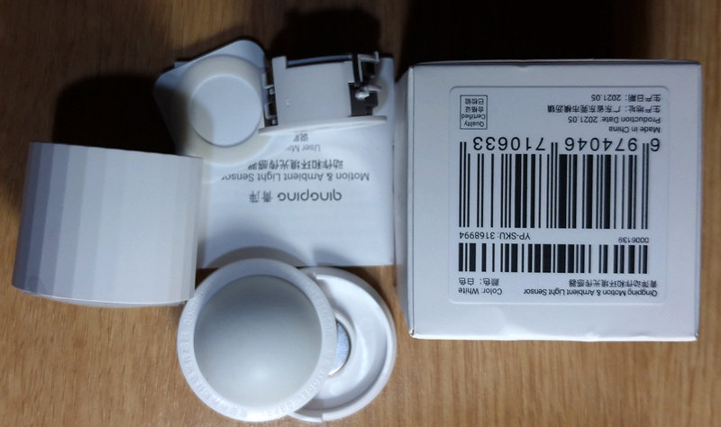
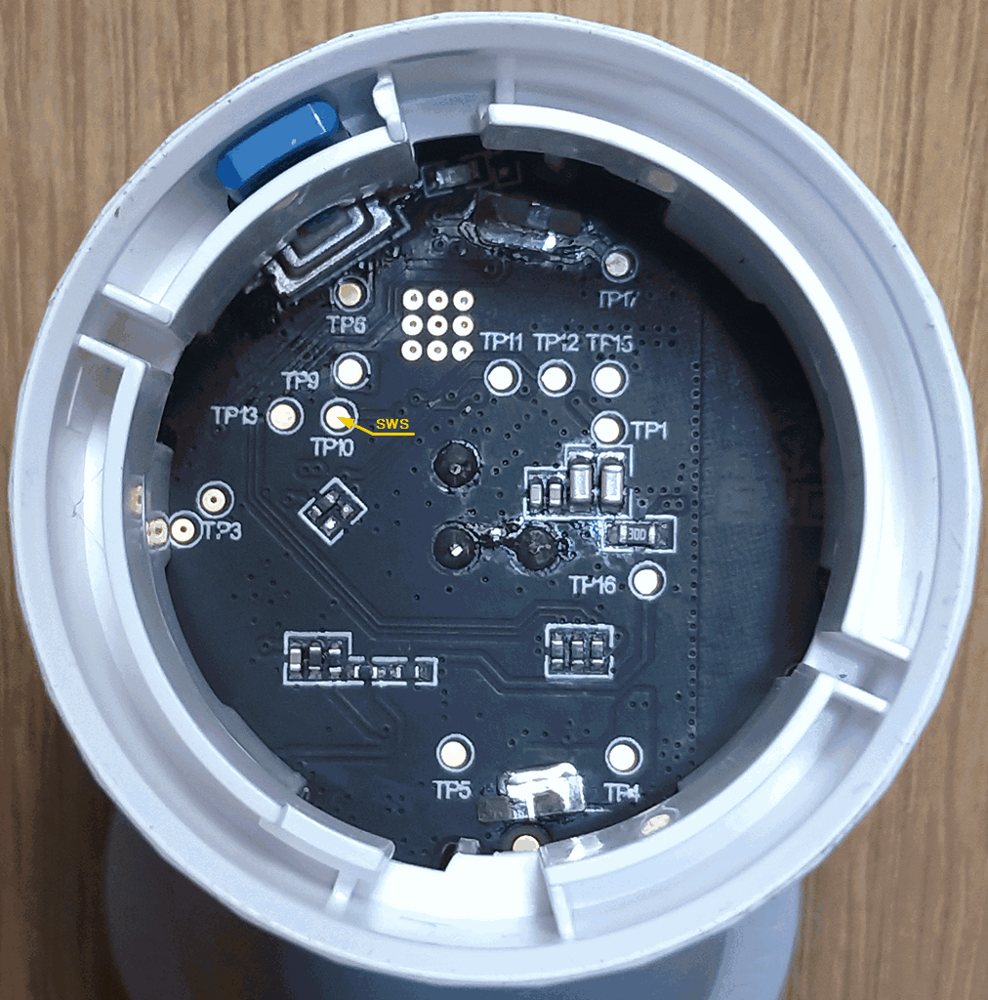
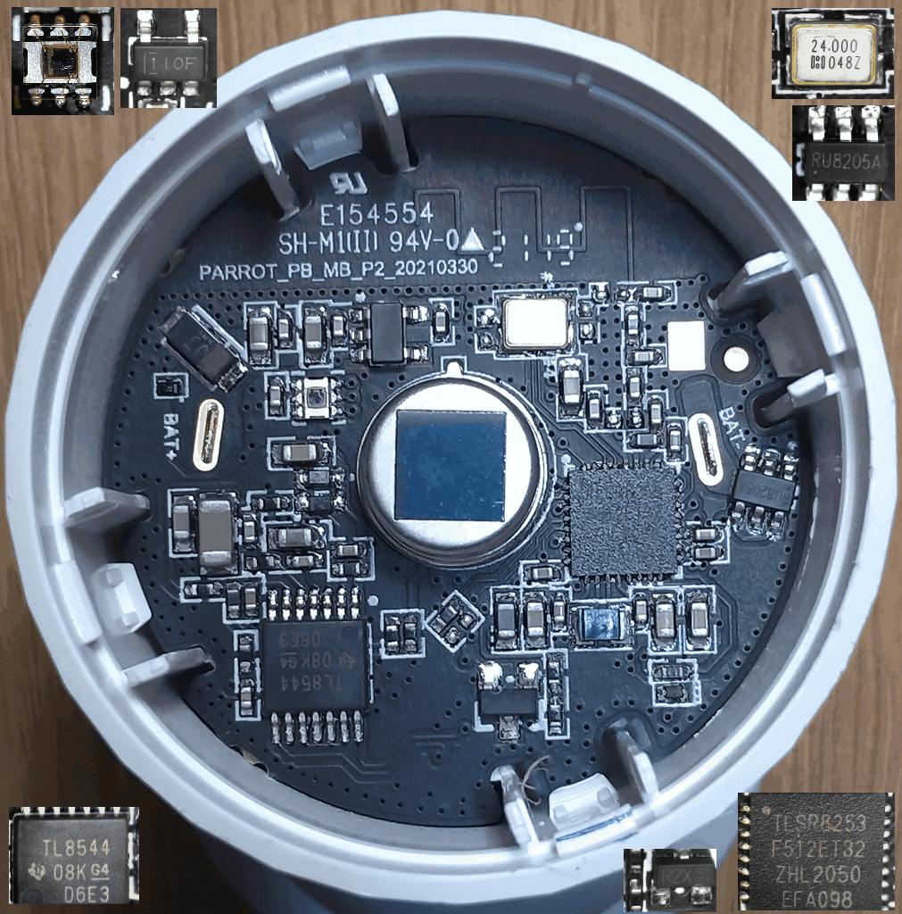

CGPR1 Qingping Motion & Light
CGPR1_Utils.html
SoC: TLSR8253F512ET32

UUID-s
Log of advertising packages by events.
Original_OTA_CGPR1_v1.1.1_0228.bin
DIY light switch from CGPR1
The contact on the printed circuit board marked "TP10" is the SWS signal.
Average power consumption 35 μA (no events)

